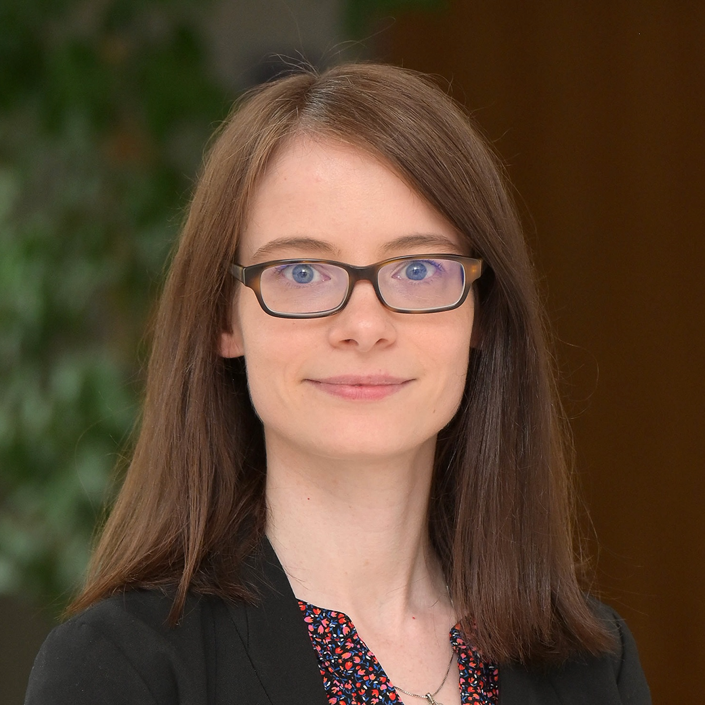

Lucy Kinski
Dr Lucy Kinski is an Assistant Professor in European Union Politics at the Salzburg Centre of European Union Studies and the Department of Political Science at the University of Salzburg. Her research focuses on parliamentary representation in the EU multi-level system, combining EU studies with comparative politics. She is the PI of the ERC Starting Grant project INCONEX. She has published in journals such as the Journal of European Public Policy, Environmental Politics, Political Studies and the Journal of Common Market Studies; her monograph European Representation in EU National Parliaments (Palgrave 2021) was shortlisted for the UACES best book prize 2021.